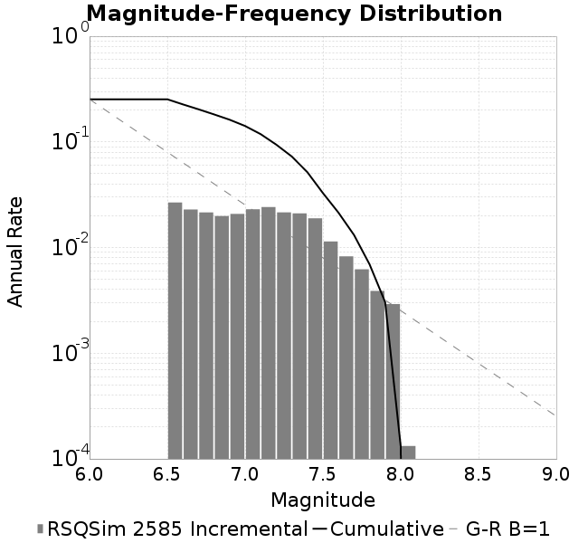
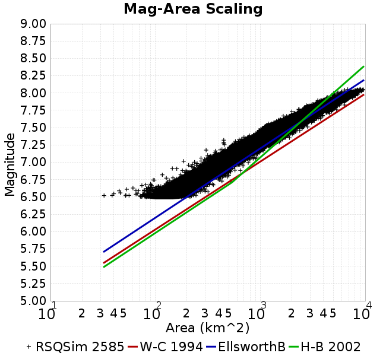

RSQSim 2585
Metadata
Name
RSQSim 2585
Date
Apr 2018
Region
Central California Box
Description
RSQSim prototype with catalog 2585 (1myr)
Velocity Model
CVM-S4.26, 4.26
Metadata
Site Hazard Comparisons
GMPE: NGAWest_2014_NoIdr, Vs30 model: Simulation Value
GMPE: ASK2014, Vs30 model: Simulation Value
Plots
Magnitude-Frequency Plot
Rupture Variation Count Plot
Magnitude-Area Plots
Site Hazard Comparisons
(top)
GMPE: NGAWest_2014_NoIdr, Vs30 model: Simulation Value
LAPD
PAS
SBSM
STNI
USC
GMPE: ASK2014, Vs30 model: Simulation Value
USC
Plots
Magnitude-Frequency Plot
(top)

Rupture Variation Count Plot
(top)
Magnitude-Area Plots
(top)
Scatter
2-D Hist
